Catania: Landing in Catania, Sicily's second city at the foot of Etna. After the 1693 earthquake it was rebuilt in Baroque style, often in black lava stone. Its landmark stands on Piazza del Duomo: "U Liotru", a lava-stone elephant carrying an Egyptian obelisk, set up in 1736 by Giovanni Battista Vaccarini. Right next to it, the cathedral of the city's patron saint, Sant'Agata.
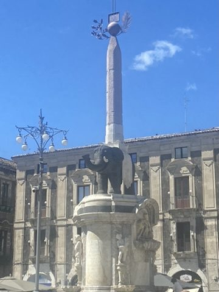
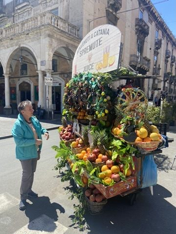
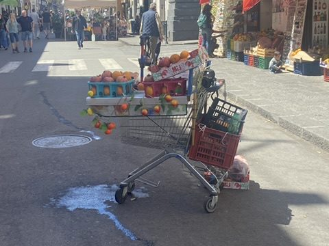
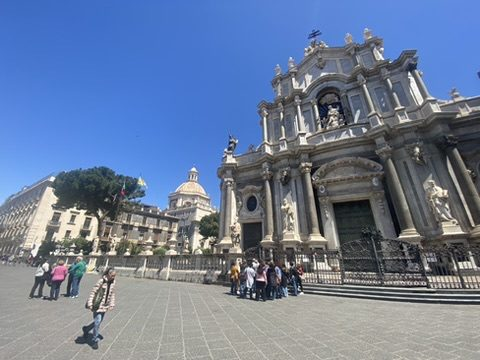
Roman Theatre: Right among the houses lies the Roman theatre from the 2nd century, partly built over by the old town. In the passages beneath it you can see the dark lava rock Catania stands on.
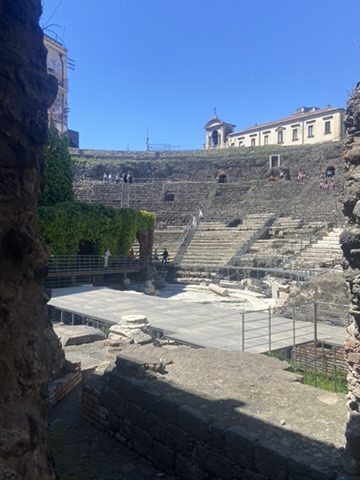
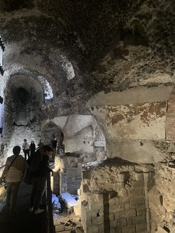
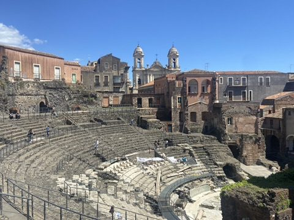
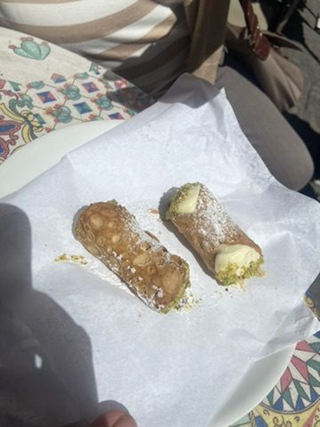
A must in Sicily: cannoli, fried pastry tubes filled with sweet ricotta.
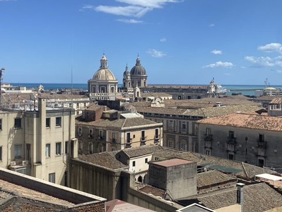
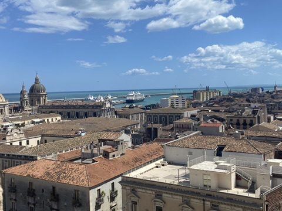
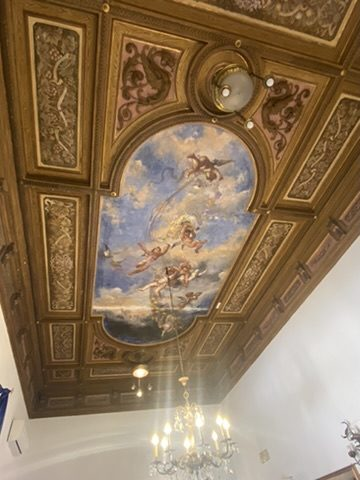
Fish market: "A Piscaria", the fish market behind the cathedral, is loud, wet and full of life – mussels, swordfish, the calls of the traders. With a Vespa in tricolore paint right in the middle.
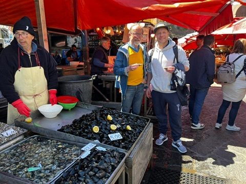
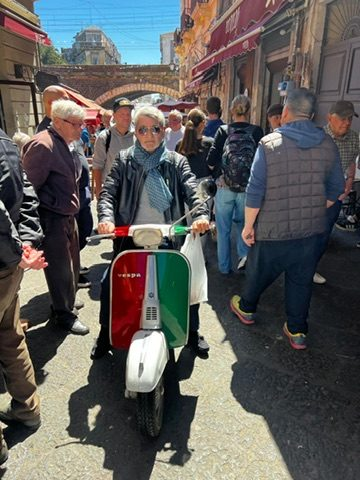
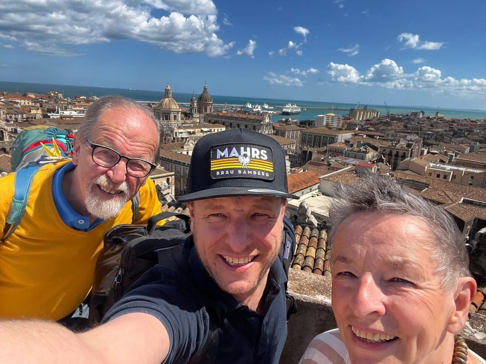
On to Enna: In the evening inland to Pergusa on the lake of the same name below Enna – and the first pizza.
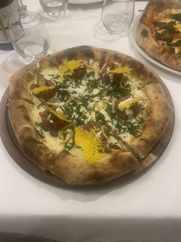